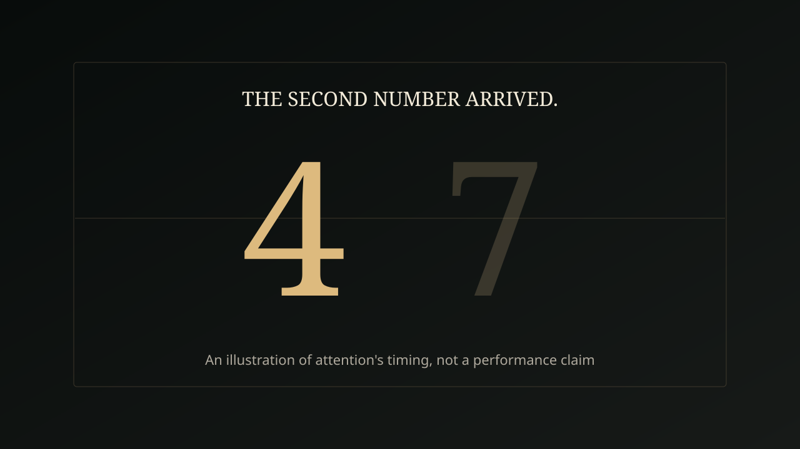

Optional 42-second illustrated explainer — storyboard only
A short film, if you want it
No autoplay, remote embed, cookie, video tracker, or player is included. This source-only preview shows the proposed original poster and provides the complete script. The film has not been encoded or approved for release.

Read the full 42-second narration and storyboard
00–07s. Two numbers flash. You recognize the first. The next may slip past.
07–14s. Researchers call this the attentional blink. The timing matters.
14–21s. A three-month intensive meditation study found a smaller blink in one trained group.
21–28s. But a controlled retreat is not a twelve-minute MP3, and no Zen12 benefit follows from that result.
28–35s. Try a free twelve-minute observation routine. See what it is like to practice consistently.
35–42s. Then make your own informed choice. The source is the story; a product is optional.
Timed VTT cue concept: ZEN12_OPTIONAL_42S.vtt. Future player requires original rights-cleared encoded video, manual controls, captions, full transcript, keyboard/pointer/screen-reader QA and explicit opt-in; audio must not autoplay.
First, try something free
Choose any quiet twelve-minute interval. Sit comfortably, set a simple timer, and let your attention rest on an ordinary sound or the feeling of breathing. When you notice that your mind wandered, note it without rating the experience and return to the chosen point. Afterward write down one thing you observed and one thing you merely expected. You have just tested whether a routine is convenient for you—not whether your brainwaves changed.
The attentional-blink experiment is different. Raymond, Shapiro and Arnell measured failures to report a second target under specific visual timing conditions in 1992. Slagter's 2007 study involved an intensive three-month meditation retreat. Neither experiment tested a twelve-minute commercial MP3. This distinction is why the archive separates useful attention science from an advertised product promise.
Use Final Vestige's free Seven Day Focus Fieldbook (the existing Jetpack signup; no duplicate list), or continue reading without subscribing.
What Zen12 actually sells
Seller-described product, not independently verified performance. The public Zen12 catalog presents audio meditation sessions around twelve minutes long and multiple listening styles. Its full-course order page describes twelve levels and forty-eight MP3s, along with quick-start materials, support and bonuses. Different landing and checkout presentations exist; these should not be conflated into a confirmed referred package.
The vendor markets its sounds as a shortcut to deeper meditation and promises outcomes such as better concentration and lower stress. Those are vendor claims. We have not found independent Zen12-specific controlled studies demonstrating those outcomes, and the 2007 meditation-retreat research does not fill that gap. There is no clinically established 'one hour in twelve minutes' equivalence shown here.
Possible fit
You already enjoy audio-led reflection, prefer short sessions, want a repeatable file-based routine, and understand that convenience is not proof of therapeutic or cognitive improvement.
Reasons to decline
You want measured attentional-blink improvement, treatment of anxiety or sleep conditions, guaranteed income, or evidence that a proprietary sound entrains your brain to a claimed state. None is established for this purchase.
Five questions before any checkout
- Exact package: Is this the full forty-eight-file course or a different starter edition, and what is actually delivered?
- True total cost: What does the final checkout charge in your currency after any tax? Public promotional prices may drift or disagree.
- Returns: What are the current applicable refund period, eligibility, process, and exceptions for this exact purchase?
- Use and accessibility: Can you download and play the file on your devices, with the volume and controls you need? Is a transcript or accessible alternative available?
- Evidence: Are you buying an audio habit aid by preference, rather than expecting medically proven or guaranteed gains in focus or health?
As of this draft, Final Vestige has not independently authenticated the referred checkout or returns. We therefore do not state a price, make a discount claim or recommend purchase at this stage.
What would we recommend?
Start with the free exercise or Fieldbook. If a structured audio library still sounds useful after that, compare exact package contents and the actual terms; there is no reason to treat a lab finding about attention as evidence of a proprietary audio result. Our investigation stands whether you purchase anything or not.
Commercial link withheld until named Final Vestige partner approval, exact permitted SKU/channel, issued earning URL, referred checkout terms and founder release authorization are verified. A merchant website link is not a substitute for authorized affiliate tracking.
Read the evidence, not just the pitch
Independent research: Raymond et al. (1992), Slagter et al. (2007), Zivony & Lamy review (2022). Full source trail and historical bridge in the published Franklin investigation and Puységur files. Product URLs and seller claims are recorded separately in the repository's source/permission matrix, not disguised as scientific citations.
Commercial principles: FTC Endorsement Guides and FTC health-claims guidance.